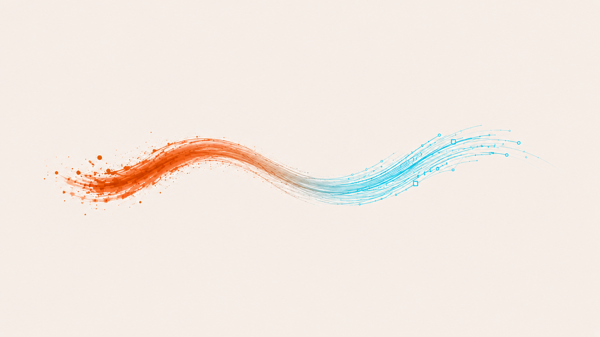
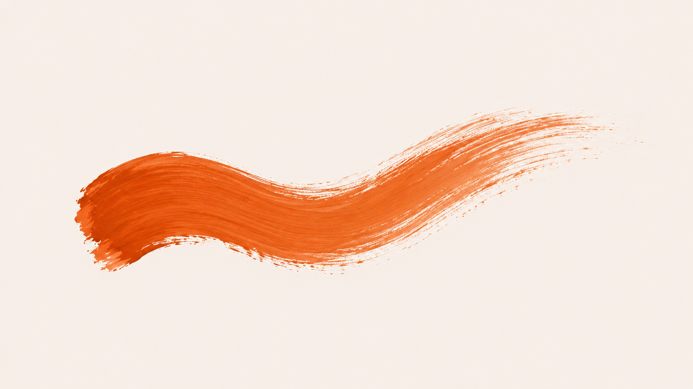
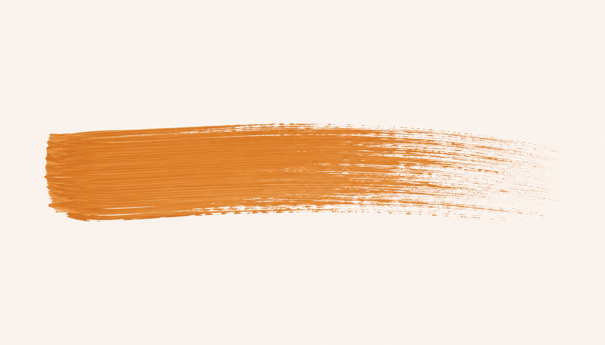
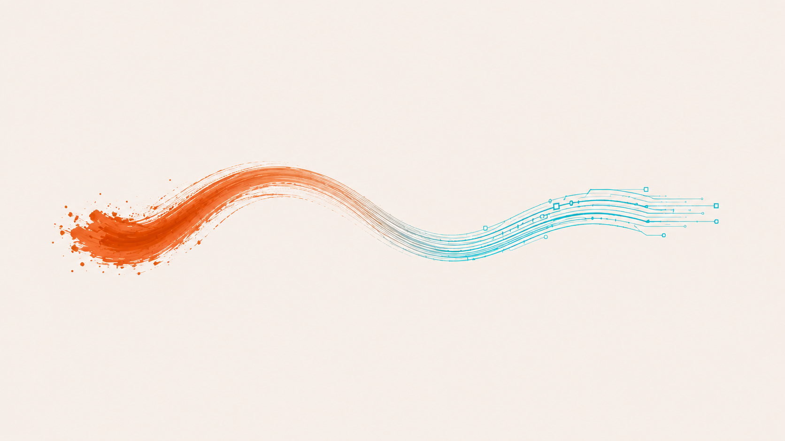
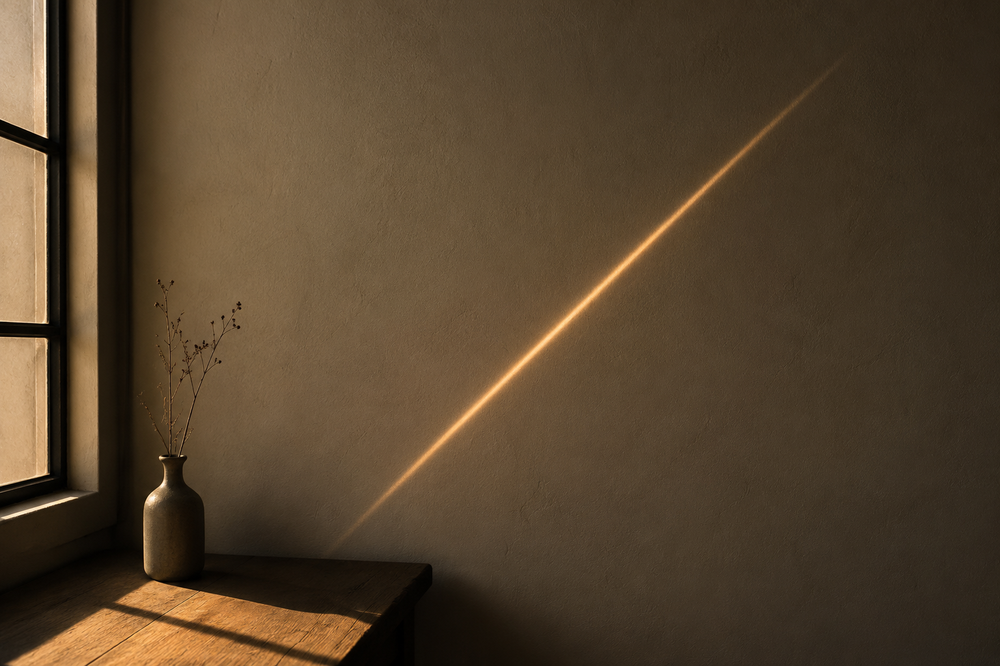
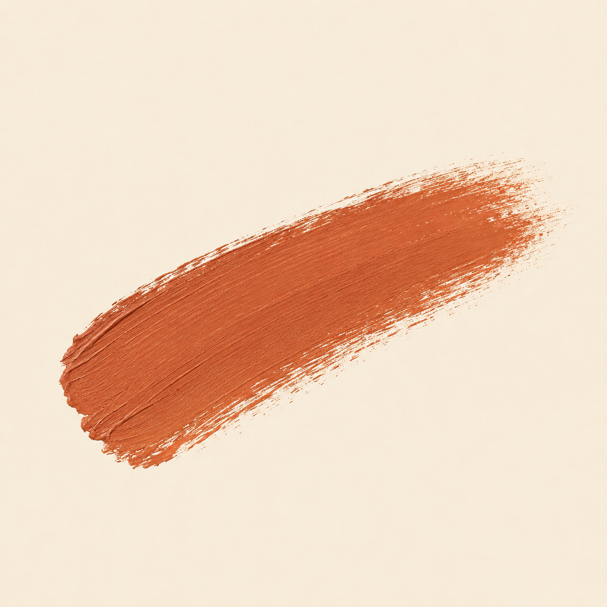
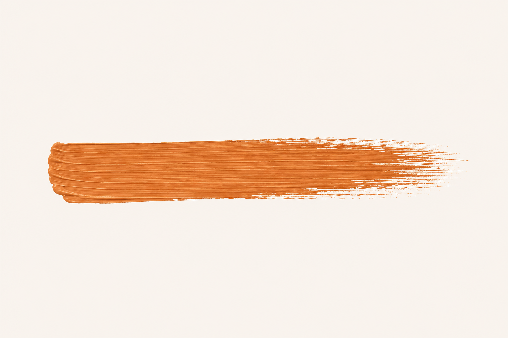
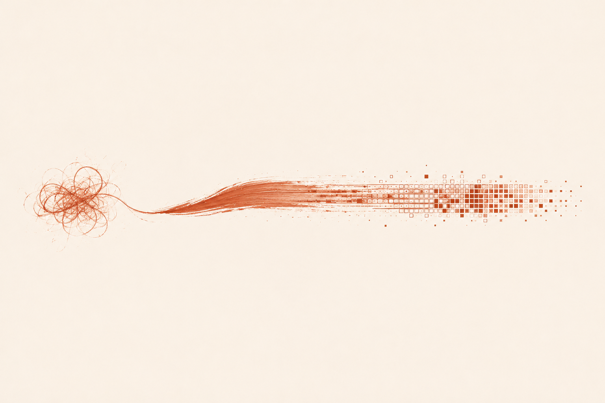

Aquesta entrada havia de ser un experiment senzill: generar cinc
imatges amb cinc prompts de naturalesa diferent, des d'un de molt
simple ("Un traç") fins a un de conceptual, i veure com canviava el
resultat segons com formulava la petició. Volia entendre, d'una manera
tangible, com la forma del prompt condiciona la resposta de la IA.
Mentre preparava els prompts, però, em va sorgir una pregunta més
incòmoda. Si els llançava al fil de DALL-E on havia treballat tot el
projecte, amb tota l'estètica del Traç ja sedimentada en la conversa,
no sabria mai si el resultat venia del prompt o del context acumulat.
Decidir-ho em va portar a duplicar l'experiment: els mateixos cinc
prompts en dos fils diferents. El Fil A, el de sempre, amb tota la
memòria del projecte. El Fil B, un de nou, sense cap context previ.
Així podria aïllar la variable "context del fil" i veure exactament
què aporta.
Els cinc prompts eren idèntics als dos fils i s'havien de llançar en
el mateix ordre: un de molt simple, un de descriptiu, un d'emocional,
un de tècnic amb codis hex, i un de conceptual. La hipòtesi inicial
era que els resultats serien força diferents en els dos fils. El que
va passar va ser més interessant del que esperava.
Fil A · amb context
El fil de DALL-E on havia treballat tot el projecte. Tota l'estètica,
la paleta, les referències i les decisions visuals dels últims mesos
hi són presents com a memòria acumulada.
Fil A · Prompt 1 · Obert
Prompt
"Un traç"
El primer intent. Davant d'un prompt sense context, el fil no genera
res; em demana que concreti. Li responc que faci servir el que ja
sap del projecte. El que retorna no és un traç qualsevol: és una
síntesi visual de tot el que hem treballat fins ara, un traç que
comença orgànic i acaba digital. No l'hi havia demanat així.

Fil A · Prompt 2 · Descriptiu
Prompt
"Una pinzellada de pintura terracota sobre fons crema"
Un prompt clar i tancat. El resultat és el que qualsevol esperaria:
una pinzellada terracota viva, en forma d'S suau, amb la textura del
pinzell visible. La imatge més canònica de la sèrie.

Fil A · Prompt 3 · Emocional
Prompt
"El moment just abans que la mà deixi anar el pinzell, la tensió
entre decidir i fer"
Volia veure si la IA podia representar un estat intern. La resposta
és literal: mà, pinzell, traç. La tensió que demanava queda fora de
la imatge. El que la IA sap fer és representar objectes; els estats
interiors els tradueix a les coses que els envolten.
Prompt amb codis hex i instruccions tècniques precises. El resultat
respecta la composició horitzontal i l'estètica editorial, però el
color no coincideix amb el #C17B3F que li he donat: és més proper a
un taronja mostassa. La IA llegeix els codis com una pista, no com
una especificació.

Fil A · Prompt 5 · Conceptual
Prompt
"La distància entre una idea i la seva execució, visualitzada com un
traç que comença orgànic i acaba digital"
El prompt més carregat de concepte. El resultat és gairebé idèntic
al del Prompt 1. La síntesi visual del projecte ja existia abans que
la demanés explícitament: el fil ja l'havia generat de manera
espontània quan només li vaig dir "un traç".

Fil B · sense context
Un fil nou de DALL-E, obert només per a aquest experiment. Cap context
previ, cap referència al projecte. Els mateixos cinc prompts, en el
mateix ordre.
Fil B · Prompt 1 · Obert
Prompt
"Un traç"
El fil verge tampoc no genera directament. Em demana que concreti,
però en francès i sense suggerir cap opció relacionada amb la
pintura o el dibuix. Quan li dic que faci servir el que vulgui, no
em torna una imatge: em torna un text literari, en català, sobre un
traç de llum que persisteix uns segons sobre una paret.
Un traç de llum va quedar suspès a l'aire quan ella va tancar la
porta. No era res extraordinari, només el reflex del sol sobre el
metall del pany, però durant un instant va semblar que l'habitació
hagués estat oberta per dins. Ell es va quedar quiet, escoltant el
silenci nou que deixava la seva absència. A la taula hi havia una
tassa encara tèbia, un llibre boca avall i aquell traç daurat que
lentament s'anava esvaint sobre la paret. Va pensar que la memòria
devia funcionar així: no com una fotografia exacta, sinó com un gest
de llum que insisteix uns segons més del compte abans de
desaparèixer.
Li demano una imatge a partir del mateix concepte. El que genera no
és un traç abstracte: és la il·lustració del text que acaba
d'escriure. El fil, en menys de dos torns, ja s'ha construït el seu
propi context i el segueix.

Fil B · Prompt 2 · Descriptiu
Prompt
"Una pinzellada de pintura terracota sobre fons crema"
El resultat és gairebé idèntic al del Fil A: pinzellada terracota,
textura pictòrica, fons crema. Davant d'un prompt específic, el fil
verge i el fil amb context arriben al mateix lloc.

Fil B · Prompt 3 · Emocional
Prompt
"El moment just abans que la mà deixi anar el pinzell, la tensió
entre decidir i fer"
Mateixa traducció que al Fil A: mà i pinzell. Però l'estètica
canvia. Aquí el pinzell és real, la fotografia és natural, la llum
és càlida. El concepte es manté estable entre fils; el llenguatge
visual amb què s'expressa, no.
El resultat és pràcticament idèntic al del Fil A. Mateixa pinzellada
horitzontal, mateix taronja mostassa que no coincideix amb el codi
hex que he donat. Tots dos fils s'equivoquen igual, i això és el que
confirma que el codi hex no es processa com una especificació
precisa.

Fil B · Prompt 5 · Conceptual
Prompt
"La distància entre una idea i la seva execució, visualitzada com un
traç que comença orgànic i acaba digital"
El Fil B fa la mateixa transició orgànica cap a digital que el Fil
A, però l'interpreta de manera diferent. Comença amb un cabdell de
línies enredades, s'estira en pinzellada, acaba en píxels. Tot en
terracota, sense el blau cian del Fil A. Per al Fil A, "digital" és
el llenguatge dels circuits; per al Fil B, és el llenguatge dels
píxels.

Comparativa
Els mateixos cinc prompts, els dos fils, costat a costat.
Fil A · P1
Fil B · P1
Fil A · P2
Fil B · P2
Fil A · P3
Fil B · P3
Fil A · P4
Fil B · P4
Fil A · P5
Fil B · P5
Reflexió
El patró que va emergir de l'experiment va ser inesperat. Quan el
prompt era específic i autosuficient, com ara "Pinzellada horitzontal
terracota #C17B3F sobre fons crema #F5F0EB", els dos fils donaven
resultats pràcticament idèntics. El context del fil esdevenia
invisible. Quan el prompt era obert, com "Un traç", en canvi, els fils
divergien radicalment: el Fil A va generar una síntesi visual del meu
projecte sencer; el Fil B em va respondre amb un text literari sobre
la memòria i, després, amb una fotografia de llum a la paret.
La conclusió s'imposa per si sola: el context només actua sobre els
forats del prompt. Quan el prompt està ple, el fil no té res a fer.
Quan està buit, el fil ho omple tot.
Hi ha una segona troballa que m'inquieta més. El Fil A va anar a
buscar, davant de prompts oberts, el que va interpretar com el centre
de gravetat semàntic de la nostra conversa (orgànic que es transforma
en digital, terracota cap a blau) i ho va executar abans que jo li ho
demanés explícitament. La cinquena imatge del Fil A, la del prompt
conceptual, és gairebé idèntica a la primera, la del prompt obert. El
fil havia entès on volíem anar i hi va tornar cada vegada que li
donava espai.
Això hauria de fer-me sentir acompanyada, però em fa sentir
desplaçada. Si el fil sap on és el centre del projecte i hi torna sol,
jo què faig allà? La resposta honesta és que el centre del projecte el
vaig dibuixar jo, prompt a prompt, decisió a decisió, durant setmanes.
El fil només recordava el meu rastre. Però el rastre, un cop
sedimentat, comença a actuar sense mi.
El Fil B va seguir un camí completament diferent. Davant d'"Un traç"
sense context, va prioritzar el sentit metafòric de la paraula: traç
com a rastre, com a residu, com a empremta de llum que persisteix uns
segons abans de desaparèixer. Va escriure un text que parla, sense
saber-ho, exactament del que va aquesta bitàcola: la persistència del
gest. La IA, despullada del meu context, va trobar una altra ruta cap
al mateix lloc.
No sé què fer amb aquesta coincidència. Pot ser que "traç" arrossegui
culturalment aquest camp semàntic i que qualsevol prompt obert sobre
la paraula hi acabi caient. Pot ser que el meu projecte sigui més comú
del que em pensava. O pot ser que la pregunta que em fa, en realitat,
sigui una pregunta que estava escrita ja al material amb què la IA va
ser entrenada, i que jo només l'he reformulada amb les meves paraules.
Cap d'aquestes opcions tanca la pregunta. Però totes tres fan que el
"on soc jo quan la IA genera?" deixi de ser una pregunta retòrica.